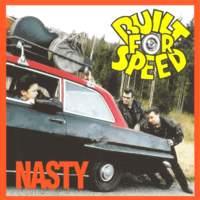

Built For Speed - Nasty (Album, 2000)
01 - We're Gonna Have A Party (3:19)
02 - Hot Rod Golf (2:30)
03 - Broken Hearted Sucker (2:35)
04 - Flat Top Joint (3:09)
05 - Leavin' This Town (3:08)
06 - Nosy Neighbour (2:38)
07 - Get Off My Back (3:45)
08 - Women All Over The Place (2:31)
09 - Shakin' All Over (2:36)
10 - Can't You See (2:44)
11 - Come Dancing (3:42)
12 - In The Nude (2:26)
13 - Ain't As Sorry (3:29)
14 - Lusty Lady (2:46)
© Flipside Records :: [FRCD 001]
Notes
Elverum, Norway.
Anders Westhagen - Vocals, Guitars
Ole J. Evensen - Upright bass, Backing vocals
Andreas Reiten Westhagen - Drums, Backing vocals
reference information: Discogs®
Review
135/366 (Project 366)
Good sort of Rock'n'Roll, Rockabilly and Modern Country. Lyrics of their own writing deserve also much attention, because musically everything is very comely, fine and harmonious in general. Although there remains a margin for improvements, embellishments and even simplifications.
The first track "We're Gonna Have A Party" is Rock and Roll tune with a bright gloss. Party time with a clear voice, topnotch guitar, restless bass and groovy drums. Wild at its rave end. Then there is a charging sound theme with a curious story in the form of a fable, "Hot Rod Golf". The same entertaining look as a car, menacingly powerful not in its dimensions. Lightweight at full weight. The third track "Broken Hearted Sucker" is a bit Country honkabilly with tender mood of self-ironic sense. Quite Rockabilly smiley stuff. The fourth track "Flat Top Joint" resembles a vintage-tuned pop ballad. Very fast-strolling moderate hop song. Galloping and hopping on the rhythm and melody. The next two songs stands out. "Leavin' This Town" is a real Rockabilly rock with a very chic tune. Actually, despite town title - sounds with a city mood. Quite good recording with its own distinctiveness. "Nosy Neighbour" is a Rockabilly rush. So actual theme, so grumpy mood. Real rock power sound with straight up motion and with originality. Teds' taste of rockabilly, maybe. Then one more strolling roll theme appears, "Get Off My Back". Rocking ballad with high enthusiasm in the performance. A lot frills and strumming, although a little boring for me. Perhaps, theme of the song is their sore point. Not at all like the next track "Women All Over The Place". Where is more amative and fanciful good tune about womens. A song with a clear sound, a rather uncomplicated motive and an energetic way of modern rockabilly rockin' and rollin'. The ninth track is a cover, "Shakin' All Over". A famous song with a fame performance. Mad enough, exciting quite and fresh pretty. Then the perfect "Can't You See" in the tracklist. Rockin' country rockabilly. With very sensible lyrics and beautiful tune. Sounds splendidly, sweet and smooth. This song is replaced by no less amazing composition "Come Dancing". Dreamy folk themed country rock and roll, perhaps. Even with poetry insert, just as with classic traditional songs pattern. The album ends with three diverse songs. "In The Nude" is Teddy Boy Rock'n'Roll with slightly nervous tune. Smugly and unusually. In many ways the song reminds other tracks, but by most and quite striking features. "Ain't As Sorry" is Hard Rocking stroll. Chopping ballad about tears away story, but snotty. And "Lusty Lady" is red hot rock'n'roll rockabilly boost for the album experience. Many sensations from the lyrics and it is fancy end with high attitude tune.
So, good example of Modern Rockabilly with a lot of general Rock'n'Roll and Country influences. Close to Teds and Rockers scene. And with some quite authentic and traditional patterns.